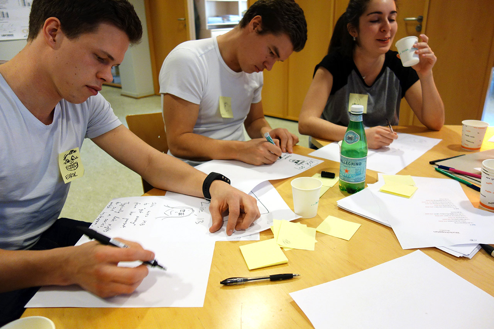
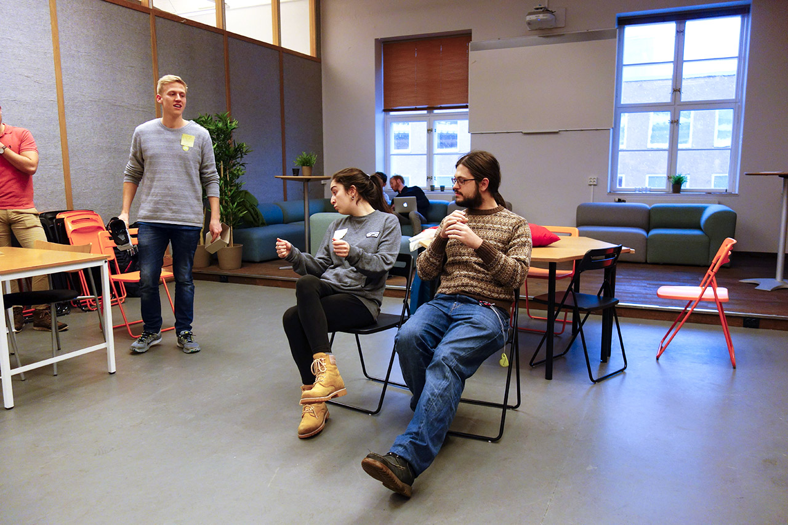

MovieMask har utviklet en 2D skjermbrille som gir deg kinoopplevelsen hvor som helst, når som helst. Idéen går ut på å legge mobilen i en “box” og bruke spesialdesignede linser som forstørrer bildet og gir deg kinofølselsen. Gründernde bak idéen er Harald Manheim og Eirik Wahlstrøm som kom på idéen da de var på kino i San Francisco.
Workshopen var todelt med en abstrakt del hvor vi så på hva annet enn et film verktøy MovieMask kunne være. Metoder som ble brukt i denne delen var icebreakers, idémyldring, personas og skissing. I del 2 av workshopen var det fokus på å konkretisere idéene fra del 1 og komme opp med konseptskisser på ulike problemstillinger ved funksjonalitet. Slutten av workshopen besto av øving av pitch.
Workshopen var super for MovieMask! Vi syns både opplegget var fint strukturert og likte veldig godt å utvide teamet vårt for å få nye synspunkter. Mest givende for oss var seansen om bruksområder og kunder. Drøftingen rundt tekniske løsninger (åpningsmekanisme, festemekanisme og polstring) ga oss også mye god innsikt. Det å være med noen en hel dag som aldri har sett produktet vårt var også utrolig lærerikt!
"Workshop med Designhjelpen var en utrolig god intensivworkshop der MovieMask fikk tatt et stort steg videre i utvilklingen vår"
